[시리즈] 영원한 해질녘의 여행
· 귀여운 수녀님이 가족을 찾아 모험을 떠나는.manhwa · 귀여운 수녀님이 남자애 데리고 모험하는.manhwa
· 귀여운 수녀님이 볼따구 만지면서 모험하는.manhwa
· 귀여운 수녀님이 촉수식물들에게서 벗어나는.manhwa
· 귀여운 수녀님이 남자애 덮쳐서 볼따구 만지는.manhwa
· 귀여운 수녀님이 12시마다 무조건 잠에 드는.manhwa
· 귀여운 수녀님이 열심히 곰을 사냥하는.manhwa
· 귀여운 수녀님이 폐건물을 돌아다니는.manhwa
· 귀여운 수녀님이 묶어놓고 협박하는.manhwa
· 귀여운 수녀님은 사막이 너무 더운.manhwa
· 귀여운 수녀님이 정체를 숨기고 사막을 거니는.manhwa
· 귀여운 수녀님의 아포칼립스 기차 여행.manhwa
· 귀여운 수녀님이 멘헤라 오는 거 달래주는.manhwa
· 귀여운 수녀님이 자기 냄새가 신경쓰이는.manhwa
· 귀여운 수녀님이 인류 멸망의 흔적을 파헤치는.manhwa
· 귀여운 수녀님이 안아달라고 조르는.manhwa
· 귀여운 수녀님이 쓰담쓰담 받고 싶어하는.manhwa
· 귀여운 수녀님이 다른 여자랑 몸싸움 벌이는.manhwa
· 귀여운 수녀님이 감금된 채 깨어나는.manhwa
· 귀여운 수녀님이 일생일대의 도주를 하는.manhwa
· 귀여운 수녀님이 스킨십을 계속 거절당하는.manhwa
· 귀여운 수녀님이 아줌마랑 말싸움 하는.manhwa
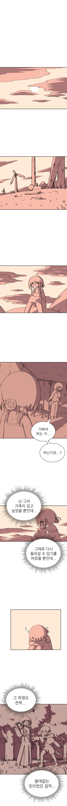
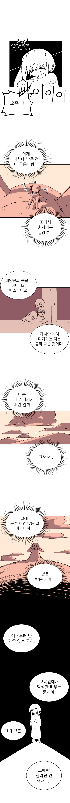
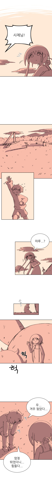
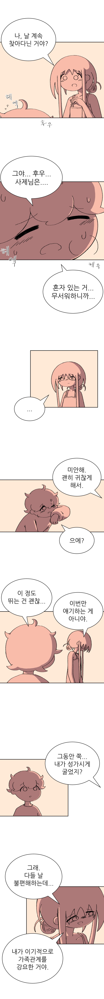
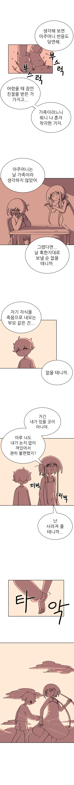
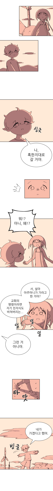
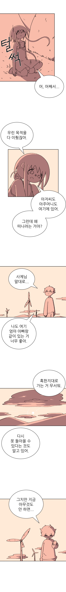
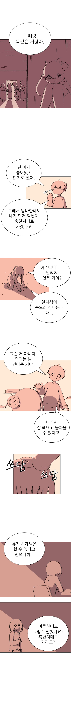
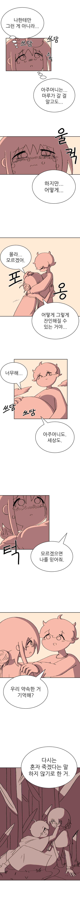
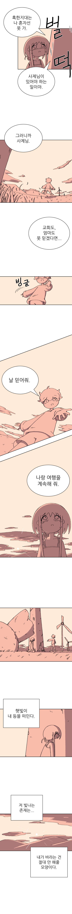
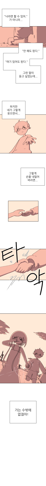
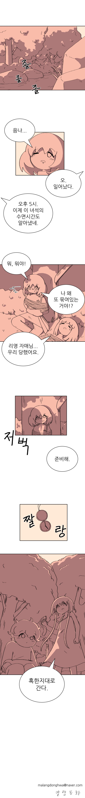
이번에도 읽어주셔서 감사합니다.
오늘로 제가 연재를 시작한지 1년이 다 되었습니다!
처음엔 정말 까마득하게 느껴졌는데... 느리긴 해도 그리다보니 제법 멀리 온 것 같아 뿌듯합니다.
함께해주신 모든 분들께 진심으로 감사드립니다!
앞으로도 잘 부탁드립니다!
블로그 : https://blog.naver.com/malangdonghwa
베도! : https://comic.naver.com/bestChallenge/detail?titleId=846741&no=24

댓글
수집 당시 댓글 35개
ㅇㅇ. · 11.22 11:33:48
· 말랑동화 · 11.22 12:47:08
가면군 · 11.22 11:43:51
· 말랑동화 · 11.22 12:48:23
ㅇㅇ · 11.22 11:48:28
· 말랑동화 · 11.22 12:49:46
이상혜지꽃 · 11.22 12:02:19
· 말랑동화 · 11.22 12:50:55
피타라텔레스 · 11.22 12:51:15
· 말랑동화 · 11.22 12:52:00
ㅇㅇ · 11.22 14:41:42
· 말랑동화 · 11.22 23:07:19
ㅇㅇ · 11.22 14:41:55
· 말랑동화 · 11.22 23:08:33
ㅇㅇ · 11.22 15:13:23
· 말랑동화 · 11.22 23:09:54
ㅇㅇ · 11.22 15:37:50
· 말랑동화 · 11.22 23:10:19
팝스 · 11.22 17:18:08
· 말랑동화 · 11.22 23:11:22
박수 · 11.22 17:33:54
· 말랑동화 · 11.22 23:11:45
ㅇㅇ · 11.22 20:02:46
· 말랑동화 · 11.22 23:12:18
이명박이뽑은칼 · 11.22 22:52:44
· 말랑동화 · 11.22 23:13:06
ㅇㅇ · 11.23 00:06:23
2456778 · 11.23 00:10:40
ㅇㅇ · 11.23 00:12:13
ㅇㅇ · 11.23 00:12:42
ㄹㄹ · 11.23 01:36:21
히이잉 · 11.23 01:53:49
ㅇㅇ · 11.23 08:39:53
ㅇㅇ · 11.23 08:52:24
ㅇㅇ · 11.23 20:29:41